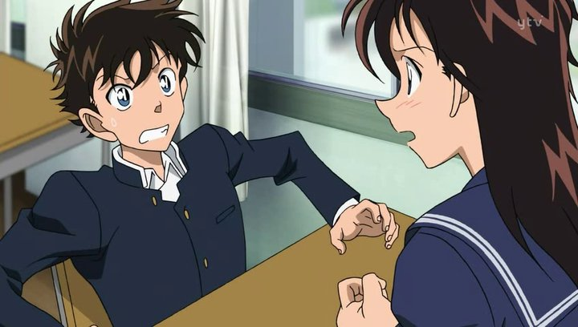
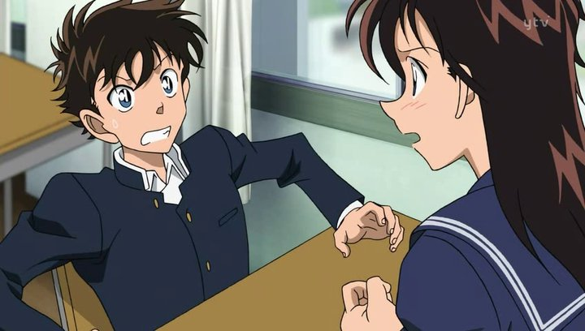

2014 · Series · Animation · Adventure · comedy · IMBD : 7.4/10
Kaito Kuroba is a seventeen-year-old high school student who is an adept magician due to the influence of his father, Toichi Kuroba.[3] Eight years prior to the series, Toichi had mysteriously died and was also the last time the Kaito Kid was spotted. In the present time, Kaito discovers a secret room in his home that was set up by his father to reveal itself on that very day. Finding the Kaito Kid's gadgets and costume in the room, Kaito dons the disguise and decides to confront Kid who has recently resurfaced after his eight years of absence. Kaito discovers Kid to be Konosuke Jii, his father's butler, who ascertains Toichi was the first Kaito Kid. Jii reveals his took on the role as Kid to lure out Toichi's murderer. Upon learning that his father was murdered, Kaito continues the role of the Kaito Kid as he searches for his father's killer.
SCREENSHOTS
 

ADDITION INFORMATIOM
Quality: 1080P | 720P
Size: 200-300 MB / Episode
Duration: 22 min
STREAM